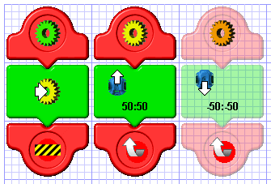
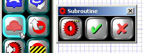
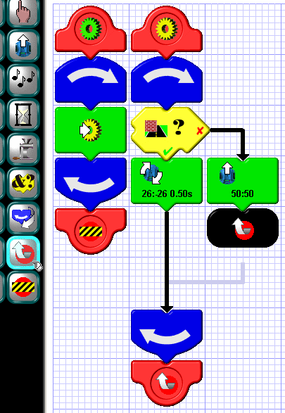
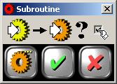
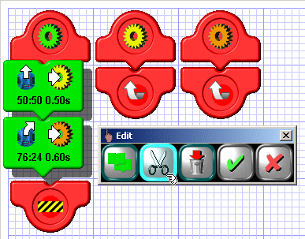
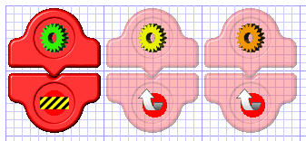
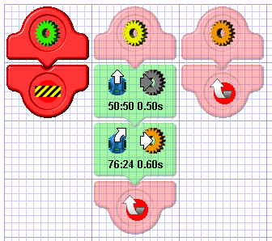
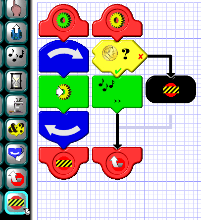

|
Subroutines
|
|
Creating Subroutines  Subroutines are semi-independent segments of your program that can be "called" from other parts of your program. When a subroutine is called, the calling program temporarily suspends operation, and the subroutine takes over. When the subroutine is finished, it "returns" to the calling program, and the calling program resumes where it left off.In the Scribbler Program Maker, you can have up to eight different subroutines, distinquished by color, including the main program, which is always green. A subroutine always begins with a subroutine begin tile, designated by a gear of the subroutine's color, and ends with a subroutine end tile, which contains a subroutine return. Subroutines are always arrayed in order by their color. Beginning with the green main program, the colors are green, yellow, orange, red, magenta, purple, blue, and cyan. In the example to the left, there is the green main program and two subroutines, yellow and orange. The main program calls the yellow subroutine, which commands the Scribbler to move forward, then returns. The orange subroutine is never called. That's why it's shown in a translucent, or inactive, state. When this program is transferred to the Scribbler, the commands making up the orange subroutine will not be sent. |
|

There are two ways to add a subroutine to your program. First, you can simply click on the add subroutine button, as shown on the left. This brings up the
subroutine dialog box, which has one multiple-choice button for choosing the color of your subroutine. Any color which is not already in use can be selected in this way.
The second way to add a subroutine is simply to call it. When you insert a tile anywhere in your program that calls a subroutine not already in existence, that subroutine
is automatically inserted for you in the proper color order. Subroutines can be nested to a maximum of three deep. For example, green can call orange, which calls blue,
which calls red. But red cannot call yet another color, since that would exceed the nesting level. In addition, a subroutine cannot call itself
|
|
Return Tiles  Return tiles provide a way to return from a subroutine immediately, without having to go to the end. In the example on the left, the yellow subroutine constantly checks for an obstruction on the left and none on the right, turning the Scribbler in increments. When the path ahead becomes clear, it commands the Scribbler to move forward and immediately returns. |
|
Editing Subroutines  When you select a subroutine to edit by clicking on its begin or end tile, the entire subroutine and all its contents are selected. By right-clicking, you can then perform the usual cut, delete, or copy functions. These work a little differently for subroutines, however, than for other program elements. If the subroutine is active and you try to delete it, the contents are deleted, but the begin and end tiles will remain. If the subroutine is inactive, you can delete the whole thing.When you cut or copy a subroutine, only the subroutine's contents get copied to the clipboard, from which you can then paste them into another subroutine. To change the color of a subroutine, click its edit button in the edit popup, and you will be presented with the box shown in the example. By clicking the multiple-choice button, you can select from the remaining allowed colors to change it to. Above the button bar is a display showing two call icons: one with the old color and one with the new color, along with a checkbox. If the box is checked, all calls to the subroutine's old color will change to the new color. If it's not checked, the calls will go to a new, empty subroutine of the old color after the subroutine changes colors. When you change a subroutine's color, it may get moved to a new location. This is because subroutines are always displayed in order by color. |
|
Cutting and Pasting Calls  In the example to the left, two motion tiles, each calling a different subroutine, are about to be cut to the clipboard. Once this happens, the worksheet looks like this: Notice that, since the calls to them are gone, both subroutines are now inactive. What we're going to do next is paste these two tiles into the yellow subroutine. |
|

But look what happened. The tile that once called the yellow subroutine appears to be calling a gray one. The reason for this is that a subroutine cannot call itself,
so the call to yellow would have been illegal. The call is changed to gray so you can see that there used to be a call there and to give you a chance to change it.
If you were to upload a program with grayed-out calls in it, those calls would be deleted entirely from your program, so as not to cause an error.
|
|
End Tiles  End tiles provide a way to quit a program immediately, without having to go to the end. They can be inserted anywhere, whether in the main program, or in a subroutine. When your program encounters an end tile, it quits, but any LEDs left burning will stay on, and any motors left running will continue to run.In the example to the left, the yellow subroutine is called repeatedly by the main program. The subroutine flips a coin. If it comes up "heads", it plays a little tune; if "tails", it quits. When you run this program, you never know how many times the tune will be played -- maybe not even once. |